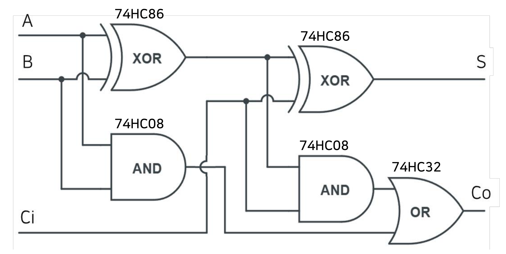
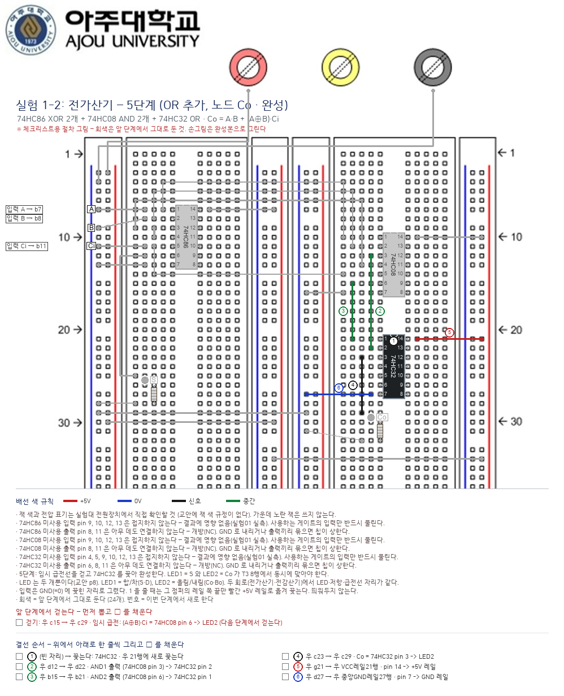
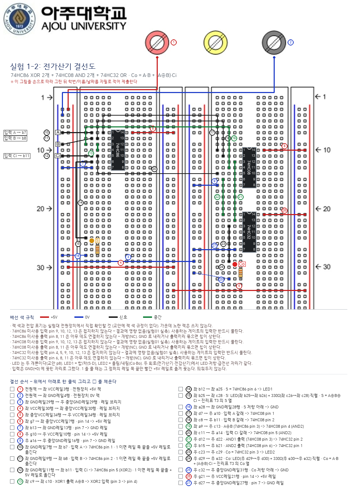
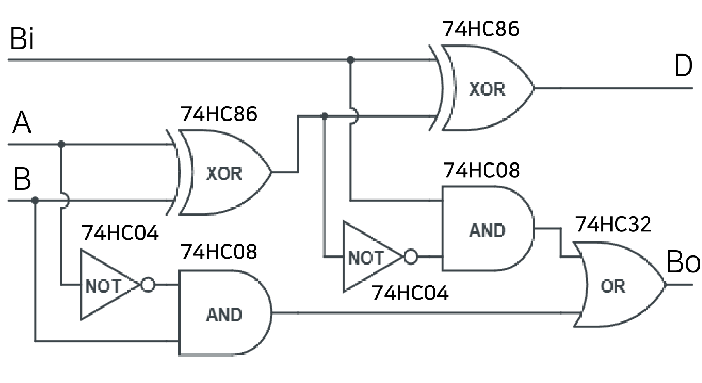

회로 1/2 · C2 · 실험 1-2) 전가산기 (74HC86 + 74HC08 + 74HC32) · 기록: T3 · 판독: LED

강의노트 p5 · 회로 구성
교안 p5 회로도 그대로. 이 주차 첫 회로라 맨바닥에서 시작한다 — 교안이 앞에 두는 반가산기(실험 1-1)는 조교 공지 _350547_1 로 하지 않는다. 단계는 다섯이다 — 관측 노드 하나가 단계 하나이고 한 단계에서 새로 꽂는 신호선은 셋 이하다. A⊕B → S → A·B → (A⊕B)·Ci → Co 순으로 신호가 흐르는 차례다. LED 는 둘뿐이라 중간 노드는 그 시점에 비어 있는 LED 의 급전선을 그 핀으로 잠시 옮겨 본다 (LED1 은 1단계, LED2 는 3·4단계). 임시 급전선은 다음 단계 첫머리에서 걷고, 그 자리는 그림 아래 "앞 단계에서 걷는다" 표가 주소로 지시한다.
단계 1

이 단계에서: 74HC86 을 S1 에 꽂는다. 전원(14→VCC, 7→GND)·레일 브리지 셋·LED1 사슬·LED2 사슬(330Ω→GND)과 S3 전원 두 가닥을 미리 꽂는다. 신호선: A→pin 1, B→pin 2, 임시로 pin 3→LED1 급전
확인 노드: A⊕B (U1 pin 3)
확인: 노드 A⊕B — LED1 을 A·B 네 조합으로 본다 (01·10 만 켜짐). 74HC86 첫 사용
단계 2

이 단계에서: 임시 급전선(U1 pin 3→LED1)을 걷는다. 신호선: Ci→pin 5, U1 pin 3→U1 pin 4, pin 6→LED1 급전
확인 노드: S (U1 pin 6)
확인: 노드 S — LED1 = A⊕B⊕Ci, T3 8행의 S 열 (입력에 1 이 홀수 개일 때만 켜짐)
단계 3

이 단계에서: 74HC08 을 S3 에 꽂는다. 신호선: A 갈래→U2 pin 1, B 갈래→U2 pin 2 (둘 다 칩 위 4·5행을 건넌다), 임시로 U2 pin 3→LED2 급전
확인 노드: A·B (U2 pin 3)
확인: 노드 A·B — LED2 를 A·B 네 조합으로 본다 (11 만 켜짐). 74HC08 첫 사용
단계 4

이 단계에서: 임시 급전선(U2 pin 3→LED2)을 걷는다. 신호선: U1 pin 3→U2 pin 4, Ci 갈래→U2 pin 5, 임시로 U2 pin 6→LED2 급전
확인 노드: (A⊕B)·Ci (U2 pin 6)
확인: 노드 (A⊕B)·Ci — LED2 를 T3 8행으로 본다 (A⊕B 와 Ci 가 둘 다 1 인 행만 켜짐)
단계 5

이 단계에서: 임시 급전선(U2 pin 6→LED2)을 걷는다. 74HC32 를 S4 에 꽂고 전원 두 가닥을 잇는다. 신호선: U2 pin 3→U3 pin 2, U2 pin 6→U3 pin 1, U3 pin 3→LED2 급전
확인 노드: Co (U3 pin 3)
확인: 노드 Co — T3 8행 전부 (74HC32 첫 사용). LED1 = S 와 LED2 = Co 가 동시에 맞아야 한다
완성본 — 손그림 원도 (회색 없음)

결선도: 실험03_1-2_결선도_전가산기.png
U1 = 74HC86 (quad 2-input XOR, DIP-14) — S1
- pin 14 → VCC(+5V)
- pin 7 → GND
- pin 1 ← 입력 A (XOR1)
- pin 2 ← 입력 B
- pin 3 → U1.pin4 (XOR1 출력 A⊕B → XOR2 입력)
- pin 3 → U2.pin4 (A⊕B → AND2 입력, 팬아웃)
- pin 4 ← U1.pin3 (XOR2)
- pin 5 ← 입력 Ci
- pin 6 → LED1 애노드 (330Ω 직렬) → GND ※ S = A⊕B⊕Ci, T3 의 S 열
U2 = 74HC08 (quad 2-input AND, DIP-14) — S3
- pin 14 → VCC(+5V)
- pin 7 → GND
- pin 1 ← 입력 A (AND1)
- pin 2 ← 입력 B
- pin 3 → U3.pin2 (AND1 출력 A·B → OR)
- pin 4 ← U1.pin3 (AND2, A⊕B)
- pin 5 ← 입력 Ci
- pin 6 → U3.pin1 (AND2 출력 (A⊕B)·Ci → OR)
U3 = 74HC32 (quad 2-input OR, DIP-14) — S4
- pin 14 → VCC(+5V)
- pin 7 → GND
- pin 1 ← U2.pin6 ((A⊕B)·Ci)
- pin 2 ← U2.pin3 (A·B)
- pin 3 → LED2 애노드 (330Ω 직렬) → GND ※ Co = A·B + (A⊕B)·Ci, T3 의 Co 열
- 미사용 입력핀: pin 9, 10, 12, 13 → 개방 (접지 생략 — 공통 규칙)
- 미사용 출력핀: pin 8, 11 → 개방
- 미사용 입력핀: pin 9, 10, 12, 13 → 개방 (접지 생략 — 공통 규칙)
- 미사용 출력핀: pin 8, 11 → 개방
- 미사용 입력핀: pin 4, 5, 9, 10, 12, 13 → 개방 (접지 생략 — 공통 규칙)
- 미사용 출력핀: pin 6, 8, 11 → 개방
Ci 입력 점퍼는 U1 pin 5 와 U2 pin 5 두 곳으로 팬아웃한다. OR 의 두 입력은 교안 회로도에서 위가 AND2, 아래가 AND1 이지만 OR 은 교환 법칙이 성립하므로 pin 1·2 의 배정은 배선 편의다 — 교안 원문이 아니다(M11).
중간 노드 기대값 — 프로브로 찍을 핀
틀린 행에서 입력 쪽 노드부터 프로브로 찍는다. 기대값과 처음 갈라지는 노드가 고장 자리다 — 그 게이트의 입력 핀이 틀리면 선, 맞으면 게이트
| A | B | Ci | A⊕B U1 pin 3 |
S U1 pin 6 |
A·B U2 pin 3 |
(A⊕B)·Ci U2 pin 6 |
Co U3 pin 3 |
|---|---|---|---|---|---|---|---|
| 0 | 0 | 0 | 0 | 0 | 0 | 0 | 0 |
| 0 | 0 | 1 | 0 | 1 | 0 | 0 | 0 |
| 0 | 1 | 0 | 1 | 1 | 0 | 0 | 0 |
| 0 | 1 | 1 | 1 | 0 | 0 | 1 | 1 |
| 1 | 0 | 0 | 1 | 1 | 0 | 0 | 0 |
| 1 | 0 | 1 | 1 | 0 | 0 | 1 | 1 |
| 1 | 1 | 0 | 0 | 0 | 1 | 0 | 1 |
| 1 | 1 | 1 | 0 | 1 | 1 | 0 | 1 |
T3 · 전가산기 진리표
출처: derived (S = A⊕B⊕Ci ; Co = A·B + (A⊕B)·Ci)
| A | B | Ci | S예상 | Co예상 | 확인 | 사진 파일명 |
|---|---|---|---|---|---|---|
| 0 | 0 | 0 | 0 | 0 | 1-2 000.jpg | |
| 0 | 0 | 1 | 1 | 0 | 1-2 001.jpg | |
| 0 | 1 | 0 | 1 | 0 | 1-2 010.jpg | |
| 0 | 1 | 1 | 0 | 1 | 1-2 011.jpg | |
| 1 | 0 | 0 | 1 | 0 | 1-2 100.jpg | |
| 1 | 0 | 1 | 0 | 1 | 1-2 101.jpg | |
| 1 | 1 | 0 | 0 | 1 | 1-2 110.jpg | |
| 1 | 1 | 1 | 1 | 1 | 1-2 111.jpg |
사진: 시험한 행마다 1장(불일치 행 필수). 파일명은 표의 '사진 파일명' 열 그대로 — 앞에 실험 번호(예: 실험03)를 붙이지 않는다
T3 · 불일치 기록
| 불일치 행 | 예상 | 실제 | 사진 파일 | 짐작된 원인 |
|---|---|---|---|---|
T4 · 전가산기 Truth Table — 참조
출처: manual:p5
| A | B | Ci | S | Co |
|---|---|---|---|---|
| 0 | 0 | 0 | 0 | 0 |
| 0 | 0 | 1 | 1 | 0 |
| 0 | 1 | 0 | 1 | 0 |
| 0 | 1 | 1 | 0 | 1 |
| 1 | 0 | 0 | 1 | 0 |
| 1 | 0 | 1 | 0 | 1 |
| 1 | 1 | 0 | 0 | 1 |
| 1 | 1 | 1 | 1 | 1 |
회로 2/2 · C4 · 실험 2-2) 전감산기 (74HC86 + 74HC04 + 74HC08 + 74HC32) · 기록: T7 · 판독: LED

강의노트 p7 · 회로 구성
교안 p7 회로도 그대로. C2(전가산기)를 다 만든 상태에서 바꾼다 — 교안이 앞에 두는 반감산기(실험 2-1)는 조교 공지 _350547_1 로 하지 않는다. 전가산기와 전감산기는 XOR 쪽이 같고 AND 입력 둘만 다르다: AND1 pin 1 이 A 대신 A' 를, AND2 pin 4 가 A⊕B 대신 (A⊕B)' 를 받는다. 그래서 새 칩은 74HC04 하나다. 0단계(걷기 보드)에서 세 가닥을 걷는다 — AND1 로 가던 A 갈래, AND2 로 가던 A⊕B, 그리고 LED2 의 최종 급전선이다. 마지막 것은 1단계에서 프로브가 된다: Bo 는 아직 뜻이 없고(AND2 입력이 비었다) LED2 가 비므로, 급전선을 A'·B 핀에 잠시 꽂아 인버터가 들어온 것을 그 자리에서 본다. 2026-09-18 실험실에서는 이 중 두 가닥을 안 걷은 채 인버터 쪽을 꽂아 LED 가 어긋났고, 그 뒤로 걷기를 그림 한 장으로 뗐다. Ci 점퍼는 그 자리 그대로 Bi 가 되고, LED1 급전(U1 pin 6)·LED2 급전(U3 pin 3)도 그대로다 — A⊕B⊕Ci 와 A⊕B⊕Bi 는 같은 함수라 LED1 은 배선을 안 바꾸고 S 에서 D 가 된다.
단계 0
이 단계에서: 전원을 끄고 걷기 ①(A→U2 pin 1 갈래, 좌 d7→우 a10)·②(U1 pin 3→U2 pin 4, 좌 a9→우 c13)·③(U3 pin 3→LED2 급전, 우 c23→우 c29)를 뽑는다. 그림의 빨간 점선이 그 세 가닥이다. 회색 선은 손대지 않는다. 새로 꽂는 것은 없다
확인: 뽑은 세 가닥이 손에 있고 우 a10·우 c13·우 c29 홀이 비어 있다 (LED 검사 없음 — 2026-09-18 에는 이 중 두 가닥을 안 뽑은 채 인버터를 꽂았다)
단계 1

이 단계에서: 74HC04 를 S2 에 꽂고 전원 두 가닥(14→VCC, 7→GND)을 잇는다. 신호선: A→U4 pin 1, U4 pin 2→U2 pin 1(좌 j 열과 중앙 레일 사이 여백으로 건넌다), 임시로 U2 pin 3→LED2 급전. Ci 점퍼는 그대로 두고 이제 Bi 로 부른다
확인 노드: A'·B (U2 pin 3)
확인: 노드 A'·B — LED2 를 T7 8행으로 본다 (A=0 이고 B=1 인 행에서만 켜짐). LED1 은 내내 D 를 보인다. 74HC04 첫 사용
단계 2

이 단계에서: 임시 급전선(U2 pin 3→LED2)을 걷는다. 신호선: U1 pin 3→U4 pin 3, U4 pin 4→U2 pin 4(여백 차선으로 건넌다), U3 pin 3→LED2 급전
확인 노드: Bo (U3 pin 3)
확인: 노드 Bo — T7 8행 전부. LED1 = D 는 1 이 홀수 개일 때, LED2 = Bo 는 001·010·011·111 에서 켜짐
완성본 — 손그림 원도 (회색 없음)

결선도: 실험03_2-2_결선도_전감산기.png
U1 = 74HC86 (quad 2-input XOR, DIP-14) — S1, C2 와 같은 칩
- pin 14 → VCC(+5V)
- pin 7 → GND
- pin 1 ← 입력 A (XOR1)
- pin 2 ← 입력 B
- pin 3 → U1.pin4 (XOR1 출력 A⊕B → XOR2 입력)
- pin 3 → U4.pin3 (A⊕B → NOT2 입력, 팬아웃)
- pin 4 ← U1.pin3 (XOR2)
- pin 5 ← 입력 Bi
- pin 6 → LED1 애노드 (330Ω 직렬) → GND ※ D = A⊕B⊕Bi, T7 의 D 열
U4 = 74HC04 (hex inverter, DIP-14) — S2
- pin 14 → VCC(+5V)
- pin 7 → GND
- pin 1 ← 입력 A (NOT1)
- pin 2 → U2.pin1 (A')
- pin 3 ← U1.pin3 (NOT2, A⊕B)
- pin 4 → U2.pin4 ((A⊕B)')
U2 = 74HC08 (quad 2-input AND, DIP-14) — S3, C2 와 같은 칩
- pin 14 → VCC(+5V)
- pin 7 → GND
- pin 1 ← U4.pin2 (AND1, A')
- pin 2 ← 입력 B
- pin 3 → U3.pin2 (AND1 출력 A'·B → OR)
- pin 4 ← U4.pin4 (AND2, (A⊕B)')
- pin 5 ← 입력 Bi
- pin 6 → U3.pin1 (AND2 출력 (A⊕B)'·Bi → OR)
U3 = 74HC32 (quad 2-input OR, DIP-14) — S4, C2 와 같은 칩
- pin 14 → VCC(+5V)
- pin 7 → GND
- pin 1 ← U2.pin6 ((A⊕B)'·Bi)
- pin 2 ← U2.pin3 (A'·B)
- pin 3 → LED2 애노드 (330Ω 직렬) → GND ※ Bo = A'·B + (A⊕B)'·Bi, T7 의 Bo 열
- 미사용 입력핀: pin 9, 10, 12, 13 → 개방 (접지 생략 — 공통 규칙)
- 미사용 출력핀: pin 8, 11 → 개방
- 미사용 입력핀: pin 5, 9, 11, 13 → 개방 (접지 생략 — 공통 규칙)
- 미사용 출력핀: pin 6, 8, 10, 12 → 개방
- 미사용 입력핀: pin 9, 10, 12, 13 → 개방 (접지 생략 — 공통 규칙)
- 미사용 출력핀: pin 8, 11 → 개방
- 미사용 입력핀: pin 4, 5, 9, 10, 12, 13 → 개방 (접지 생략 — 공통 규칙)
- 미사용 출력핀: pin 6, 8, 11 → 개방
A 는 U1 pin 1·U4 pin 1 로, Bi 는 U1 pin 5·U2 pin 5 로, A⊕B(U1 pin 3) 는 U1 pin 4·U4 pin 3 으로 팬아웃한다. OR 의 pin 1·2 배정은 C2 와 같은 이유로 배선 편의다(M11).
중간 노드 기대값 — 프로브로 찍을 핀
틀린 행에서 입력 쪽 노드부터 프로브로 찍는다. 기대값과 처음 갈라지는 노드가 고장 자리다 — 그 게이트의 입력 핀이 틀리면 선, 맞으면 게이트
| A | B | Bi | A' U4 pin 2 |
A⊕B U1 pin 3 |
(A⊕B)' U4 pin 4 |
D U1 pin 6 |
A'·B U2 pin 3 |
(A⊕B)'·Bi U2 pin 6 |
Bo U3 pin 3 |
|---|---|---|---|---|---|---|---|---|---|
| 0 | 0 | 0 | 1 | 0 | 1 | 0 | 0 | 0 | 0 |
| 0 | 0 | 1 | 1 | 0 | 1 | 1 | 0 | 1 | 1 |
| 0 | 1 | 0 | 1 | 1 | 0 | 1 | 1 | 0 | 1 |
| 0 | 1 | 1 | 1 | 1 | 0 | 0 | 1 | 0 | 1 |
| 1 | 0 | 0 | 0 | 1 | 0 | 1 | 0 | 0 | 0 |
| 1 | 0 | 1 | 0 | 1 | 0 | 0 | 0 | 0 | 0 |
| 1 | 1 | 0 | 0 | 0 | 1 | 0 | 0 | 0 | 0 |
| 1 | 1 | 1 | 0 | 0 | 1 | 1 | 0 | 1 | 1 |
T7 · 전감산기 진리표
출처: derived (D = A⊕B⊕Bi ; Bo = A'·B + (A⊕B)'·Bi)
| A | B | Bi | D예상 | Bo예상 | 확인 | 사진 파일명 |
|---|---|---|---|---|---|---|
| 0 | 0 | 0 | 0 | 0 | 2-2 000.jpg | |
| 0 | 0 | 1 | 1 | 1 | 2-2 001.jpg | |
| 0 | 1 | 0 | 1 | 1 | 2-2 010.jpg | |
| 0 | 1 | 1 | 0 | 1 | 2-2 011.jpg | |
| 1 | 0 | 0 | 1 | 0 | 2-2 100.jpg | |
| 1 | 0 | 1 | 0 | 0 | 2-2 101.jpg | |
| 1 | 1 | 0 | 0 | 0 | 2-2 110.jpg | |
| 1 | 1 | 1 | 1 | 1 | 2-2 111.jpg |
사진: 시험한 행마다 1장(불일치 행 필수). 파일명은 표의 '사진 파일명' 열 그대로 — 앞에 실험 번호(예: 실험03)를 붙이지 않는다
T7 · 불일치 기록
| 불일치 행 | 예상 | 실제 | 사진 파일 | 짐작된 원인 |
|---|---|---|---|---|
T8 · 전감산기 Truth Table — 참조
출처: manual:p7
| A | B | Bi | D | Bo |
|---|---|---|---|---|
| 0 | 0 | 0 | 0 | 0 |
| 0 | 0 | 1 | 1 | 1 |
| 0 | 1 | 0 | 1 | 1 |
| 0 | 1 | 1 | 0 | 1 |
| 1 | 0 | 0 | 1 | 0 |
| 1 | 0 | 1 | 0 | 0 |
| 1 | 1 | 0 | 0 | 0 |
| 1 | 1 | 1 | 1 | 1 |